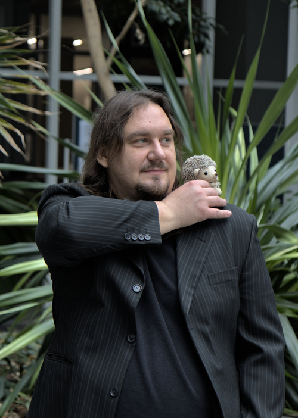

konrad.sieküêågmail.com
I explain things
I write code, I write prose, I do sketchy things to runtimes
I solve simple problems in complicated ways
I abstract
My core interests are
‣ programming languages, especially abstractions and runtimes
‣ concurrency, especially transactions
‣ processing large data
‣ distributed systems
My skills include
‣ research and synthesis
‣ programming in numerous languages
‣ teaching
‣ technical writing
I program in
‣ (currently) Rust, C, R, Bash
‣ (previously) Scala, Python, Java, OCaml
‣ (intermittently) numerous others
I speak
‣ (proficiently) English and Polish
‣ (learning) Czech and French
January 2017 Doctorate in Computing Science at Poznań University of Technology
Dissertation: Distributed pessimistic transactional memory: algorithms and properties
Advisor: Paweł T. Wojciechowski
Reviewers: Marek Tudruj, Michel Raynal
September 2009 Master’s in Computing Science (Software Engineering) at Poznań University of Technology
Thesis: A Java source code precompilation tool for static analysis and modification of programs for the Atomic RMI library
Advisor: Paweł T. Wojciechowski
February 2008 Bachelor of Engineering in Computing Science at Poznań University of Technology
Thesis: Amebae: a group instant messenger for developers (co-author)
Advisor: Bartosz Walter
June 2007 Bachelor of Arts in English Philology at PWSZ in Piła
Thesis: Computer-assisted language learning software: experimental study
Advisor: Anna Szczepaniak-Kozak
2017–2022 Post-doc researcher at Programming Research Lab at Czech Technical University in Prague
‣ Analysis of large code repositories
‣ Larger than memory object abstraction for R
‣ R runtime internals survey
‣ Teaching
most of 2017 Visiting researcher at Programming Research Lab at Northeastern University
‣ Lazy evaluation in R
‣ Teaching
2013–2017 Research assistant at Distributed Systems Group at Poznań University of Technology
‣ Transactional memory safety properties
‣ Distributed TM system implementation and benchmarking
‣ Static analysis and code generation
‣ Teaching
2009–2012 Developer for IT-SOA Research Project at Poznań University of Technology
‣ Static analysis of critical sections
‣ Code generation and Java bytecode instrumentation
2008–2009 Developer for PSI Poland
‣ Database stuff for an automotive factory
2005–2006 Apprentice English Language Teacher at Elementary School No. 4 in Piła
‣ Teaching (under supervision)
February 2019 UFOs: Lazy larger-than-memory object arrays via userfaultfd
User provides an arbitrary function to populate a chunk of memory. Framework allocates an area of memory and transparently executes the population function when a chunk is read or written to Chunks are seemlessly garbage-collected and re-generated as needed. Example implementations generate in-memory arrays from columns in CSV files, BZIP file, and formulas Comes with C, R, and Rust bindings
My contribution: Back-ends, R bindings and utilities, parts of garbage collection.
July 2020 CodeDJ: Reproducible queries over large-scale software repositories
Infrastructure for querying GitHub and similar repositories for quantitative software engineering research (especially project selection) in large code datasets. It prioritizes reproducibility and scalability and consists of two modules. Parasite is an incremental downloader and persistent datastore. Djanco is an in-memory database and query language embedded in Rust
My contribution: Djanco and surrounding tooling
February 2021 FML: A small runtime for teaching runtimes
Toy bytecode compiler and interpreter designed as a model for student implementations in a runtimes class Runs a vaguelky ML-like toy dynamic language with objects, inheritence, dynamic dispatch and garbage collection but not much else. The compiler generates slightly extended Feeny bytecode (another teaching language) consisting of 17 ops and 7 internal objects
My contribution: Everything
July 2021 Rust-delegate: Method delegation generator macro for Rust
A Rust macro that generates method delegation to inner fields within structs
My constribution: Syntax for injecting arbitrary expressions as arguments ot delegated functions
July 2018 TinyTracer: A minimalistic tracer for analyzing the composition of R objects
R 3.5 runtime variant instrumented to analyze objects at garbage collection The tracer records the types of each object, and the types object in all the slots slots in each object Used to find rare and anomalous object constuction
My contribution: Everything
2017–2018 R-dyntrace: A dynamic tracer for R
An infrastructure for programmable probes into the R runtime. Used to perform custom dynamic analysis of R code. Subsequently used in research into lazy evaluation in R programs
My contribution: Overall design and implementation of probes in the previous version
2019–2020 GHGrabber: Small Git scraper
A small multi-process bash program that gathers basic information about a Git repositories from a list of URLs and outputs CSV files. Used to collect large datasets for teaching and software engineering research
My contribution: Everything
2010–2016 AtomicRMI: Pessimistic distributed transactional memory system over Java RMI
Implementation of pessimistic transactional concurrency control for Java RMI RMI objects are instrumented to The algorithm assigns versions to shared objects and uses them to guide how transactions lock and release them It uses upper bounds on the number of accesses of an object within transactions to release locks early, if this is safe. It also uses local buffers to defer the need to synchronize transactions in specific situations
My contribution: Optimizations to the original algorithms, most of the implementation
2008-2016 GrittyScripts A blog collecting miscallaneous scripts
A blog presenting small useful scripts in Bash, Python, AWK, OCaml, and other languages with some analysis of the problem and attempts at clever solutions and dirty hacks
My contribution: Everything
2019-2021 Runtime systems (NI-RUN B202) at Czech Technical University in Prague
Course on process virtual machines for programming languages teaching basic concepts, taxonomy of VMs, architecture of runtimes, bytecode compilation and interpretation, memory management, and just in time compilation
Designed and taught independently
2018 Object-oriented programming (BIE-OOP B191) Course on the principles of object oriented programming and design in Scala with an emphasis on practical techniques for developing complex software and software engineering skills: testing, error handling, refactoring, design pattern
My contribution: leading a lab group and lectures on object-oriented design
Led by: Filip Křikava
2017 Expeditions in Data Science (DS6050) at Northeastern University
Course on practical problems of data science projects, teaching importing, tyding and transformation of large data, statistical modelling, visualization, repeatability and reproducibility of results
My contribution: assignments and lectures on databases
Led by: Jan Vitek
2017 Parallel data processing in MapReduce (DS6240) at Northeastern University
Course on distributed processing of large data involving Hadoop and Spark, H20, and Tensorflow
My contribution: assignment designs and lectures on pipeline processing, Spark and Hadoop
Led by: Jan Vitek
2014–2016 Safe programming methods (MBP) at Poznań University of Technology
Course on safe programming methods and languages in the context of concurrent and distributed systems: memory models, monitors, transactional memory, message passing, map-reduce. Labs involved a complete functional programming course in Scala explaining techniques like currying, lazy evaluation, and trampolining, as well as programming with sactors
My contribution: designed and implementation of the functional programming sub-course as teaching associate
Led by: Paweł T. Wojciechowski
2016 Network Programming (SK2) at Poznań University of Technology
Network programming and advanced network concept course. C systems programming involving sockets and threads. Ad-hoc wireless networks, load balancing, DNS, and VLAN My contribution: leading the labs as teaching associate, preparing course materials and assignments Led by: Michał Sajkowski
2012–2013 Networks (SK1) at Poznań University of Technology
Introductory course to computer networks: IP addressing, subnets, structural cabling, OSI model with details on physical, network, and transport layers, static and dynamic routing Contribution: leading the labs as teaching associate, preparing course materials and assignments Led by: Michał Kalewski
2009–2016 Operating systems (SOP) at Poznań University of Technology
Introductory course to operating systems: OS definition, processor scheduling, virtual memory, I/O, and filesystems. The laboratory portion involved an introduction to Linux and Bash
Contribution: leading the labs as teaching associate, preparing course materials and assignments
Led by: Dariusz Wawrzyniak, Anna Kobusińska, and Michał Sajkowski
2009–2017 Basic IT (PIN labs) at Poznań University of Technology (for Poznań University of Medical Sciences students)
As teaching associate with lectures by Izabela Szczęch
July 2021 CodeDJ: Reproducible queries over large-scale software repositories
Petr Maj, Konrad Siek, Alexander Kovalenko, and Jan Vitek
In Proceedings of ECOOP’21: European Conference on Object-Oriented Programming
DOI: 10.4230/LIPIcs.ECOOP.2021.6 and artifact: üîó
Submitted December 2019 Last-use Opacity: A Strong Safety Property for Transactional Memory with Prerelease Support
Accepted December 2021 Konrad Siek, Paweł T. Wojciechowski
Distributed Computing. To appear.
March 2018 Helenos: A realistic benchmark for distributed transactional memory
Paweł Kobyliński, Konrad Siek, Jan Baranowski, and Paweł T. Wojciechowski
Journal of Software: Practice and Experience, vol. 48, issue 3
DOI: 10.1002/spe.2548
December 2015 Proving opacity of transactional memory with early release
Konrad Siek and Paweł T. Wojciechowski
Foundations of Computing and Decision Sciences, vol 40, issue 4
DOI: 10.1515/fcds-2015-0018
April 2015 Atomic RMI: a distributed transactional memory framework
Konrad Siek and Paweł T. Wojciechowski
In Proceedings of HLPP 2014: Symposium on High-level Parallel Programming and Applications
International Journal of Parallel Programming, vol, 44, issue 3
DOI: 10.1007/s10766-015-0361-x
August 2012 A formal design of a tool for static analysis of upper bounds on object calls in Java
Konrad Siek and Paweł T. Wojciechowski
In Proceedings of FMICS 2012: Workshop on Formal Methods for Industrial Critical Systems
Lecture Notes in Computer Science, vol. 7437
DOI: 10.1007/978-3-642-32469-7_13
October 2008 Barcode scanning from mobile phone camera photos delivered via MMS: Case study
Adam Wojciechowski and Konrad Siek
In Proceedings ER 2008: International Conference on Conceptual Modeling
Lecture Notes in Computer Science, vol. 5232
DOI: 10.1007/978-3-540-87991-6_27
July 2021 Userfault objects: transparent programmable memory
Konrad Siek and Colette Kerr
In Proceedings of ICOOOLPS’21: Workshop on Implementation, Compilation, Optimization of Object-oriented Languages, Programs and Systems
July 2020 Larger-than-memory R
Konrad Siek and Colette Kerr
In Proceedings of useR’20: The R User Conference
October 2016 Atomic RMI 2: distributed transactions for Java
Paweł T. Wojciechowski and Konrad Siek
In Proceedings of AGERE’16: Workshop on Programming Based on Actors, Agents, and Decentralized Control
October 2014 Relaxing opacity in pessimistic transactional memory Konrad Siek and Paweł T. Wojciechowski
In Proceedings of DISC’14: Symposium on Distributed Computing
July 2014 Zen and the art of concurrency control: An exploration of TM safety property space with early release in mind
Konrad Siek and Paweł T. Wojciechowski
In Proceedings of WTTM’14: the 6th Workshop on the Theory of Transactional Memory
April 2014 Having Your Cake and Eating it Too: Combining Strong and Eventual Consistency
Paweł T. Wojciechowski and Konrad Siek
In Proceedings of PaPEC 2014: Workshop on the Principles and Practice of Eventual Consistency
July 2013 Towards a Fully-Articulated Pessimistic Distributed Transactional Memory
Konrad Siek and Paweł T. Wojciechowski
In Proceedings of SPAA 2013: the 25th ACM Symposium on Parallelism in Algorithms and Architectures
June 2013 Rollbacks in Pessimistic Distributed TM
Paweł T. Wojciechowski and Konrad Siek
SRDC’13: TRANSFORM Summer School on Research Directions in Distributed Computing
April 2012 Transaction Concurrency Control via Dynamic Scheduling Based on Static Analysis
Paweł T. Wojciechowski and Konrad Siek In Proceedings of WTM 2012: Euro-TM Workshop on Transactional Memory
July 2010 Statically Computing Upper Bounds on Object Calls for Pessimistic Concurrency Control
Konrad Siek and Paweł T. Wojciechowski
In Proceedings of EC² 2010: Workshop on Exploiting Concurrency Efficiently and Correctly
ongoing Nilay Baranwal: Structured printing framework
Bachelor thesis at Czech Technical University in Prague
As supervisor
2021 Jan Jindráček: Usability improvements to JavaScript/ECMAScript
Master thesis at Czech Technical University in Prague
As supervisor
2016 Jakub Cieślak and Kamil Kozubal: Implementation of distributed transactional memory
Engineering thesis at Poznań University of Technology
As assistant supervisor under Paweł T. Wojciechowski
2015 Jan Baranowski: Benchmarks for evaluating distributed transactional memory Master thesis at Poznań University of Technology
As assistant supervisor under Paweł T. Wojciechowski
2015 Martin Witczak: Atomic Café—A distributed multimedia playback system
Master thesis at Poznań University of Technology
As assistant supervisor under Paweł T. Wojciechowski
2019 ETAPS’19: European Joint Conferences on Theory and Practice of Software
Role: poster chair
2018 SPLASH’18: Systems, Programming, Languages, and Applications: Software for Humanity
Role: poster chair
2015 COST Action IC1001: Transactional Memories: Foundations, Algorithms, Tools, and Applications
Role: management comittee substitute member for Poland
2014–2016 PIWO: Poznańska Impreza Wolnego Oprogramowania (Poznań Free Software Meetup)
Role: lead organizer and resurector
2012–2016 KN SKISR: Koło Naukowe Sieci Komputerowych i Systemów Rozproszonych (Networks and Distributed Systems Student Club)
Role: faculty organizer
2007 District Municipal Public Library in Piła CMS system
Role: developement and deployment for a content manmagement system for the local library website
Popular science talks and programming courses:
‣ Remedial scala 2019
‣ Transactional safety primer (aka Konrad does Transactions) 2018
‣ System Aktorów (Actor Systems) 2016
‣ Podstawy Programowania w Pythonie (Basics of Python Programming) 2015
‣ Programowanie Funkcyjne w Pythonie (Functional Programming in Python) 2013
‣ Warsztat Python (Python Workshop) 2013
‣ Bezbolesne Programowanie Współbieżne (Painless Concurrent Programming) 2012, 2014
Inking (like drawing, but with ink)
Taking overexposed photos
Uncool musical instruments
Bad sci-fi audiobooks
Explaining how language works
Kendo for one summer and then never again